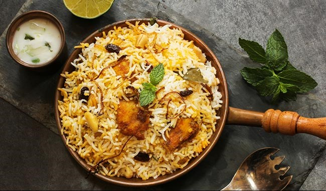

Delicious Dum Briyani Recipe

Ingredients
Chicken & Marinade:
- 500g chicken
- 200g yogurt
- 1/4 tbsp Kashmiri chili powder
- 1/4 tbsp turmeric
- 1 tsp coriander powder
- 1 tsp shahi jeera
Rice:
- 500g Basmati rice
- 3/4 tbsp shahi jeera
- 2-star anise
- Salt
- Whole spices
- Lemon juice
Layering:
- Ghee
- Saffron in milk
- Coriander leaves
- Mint leaves
- Fried raisins
- Fried cashews
Steps
- Prepare Onions: Salt sliced onions, squeeze out water, fry till golden, and set aside.
- Marinate Chicken: Mix chicken with yogurt, spices, and fried onions. Marinate for 2 hours.
- Cook Rice: Soak rice, boil with spices, and cook 50% first, then 70% later.
- Layer Biryani:
- Place bay leaves and marinated chicken in a handi.
- Add 50% cooked rice, toppings (onions, herbs, nuts, saffron milk).
- Add 70% cooked rice on top and repeat toppings.
- Seal with dough.
- Dum Cooking: Cook on high for 15 mins, then on low for 20 mins. Rest for 10 mins.
- Serve: Open carefully and serve hot with raita.